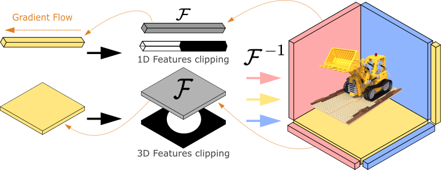

We present a novel approach for few-shot NeRF estimation, aimed at avoiding local artifacts and capable of efficiently reconstructing real scenes. In contrast to previous methods that rely on pre-trained modules or various data-driven priors that only work well in specific scenarios, our method is fully generic and is based on controlling the frequency of the learned signal in the Fourier domain. We observe that in NeRF learning methods, high-frequency artifacts often show up early in the optimization process, and the network struggles to correct them due to the lack of dense supervision in few-shot cases. To counter this, we introduce an explicit curriculum training procedure, which progressively adds higher frequencies throughout optimization, thus favoring global, low-frequency signals initially, and only adding details later. We represent the radiance fields using a grid-based model and introduce an efficient approach to control the frequency band of the learned signal in the Fourier domain. Therefore our method achieves faster reconstruction and better rendering quality than purely MLP-based methods. We show that our approach is general and is capable of producing high-quality results on real scenes, at a fraction of the cost of competing methods. Our method opens the door to efficient and accurate scene acquisition in the few-shot NeRF setting.

BibTex Code Here